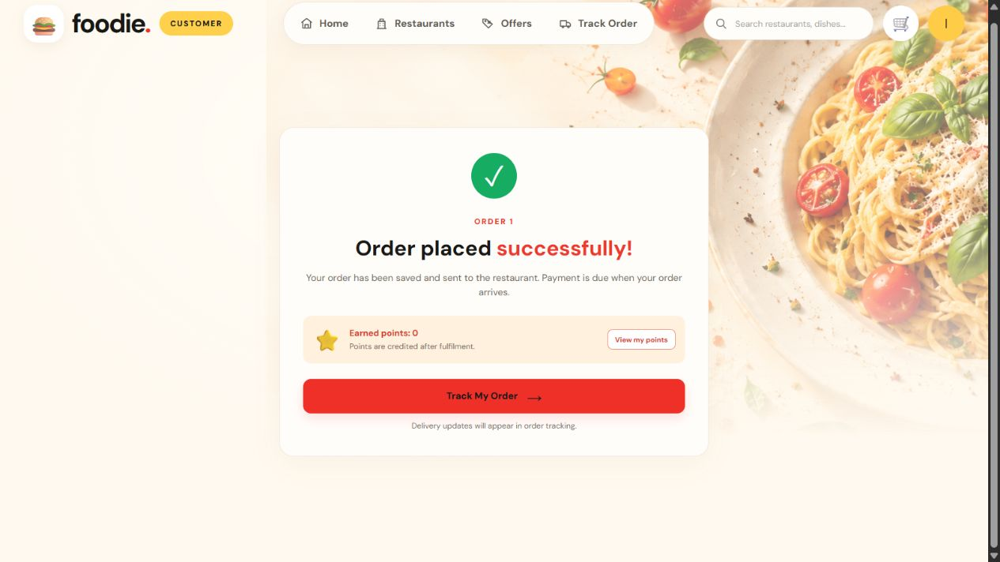
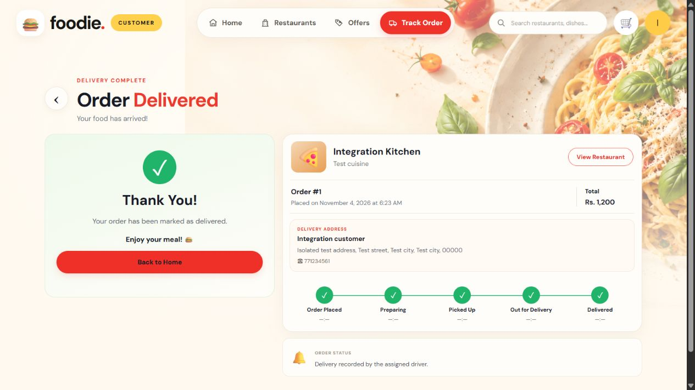
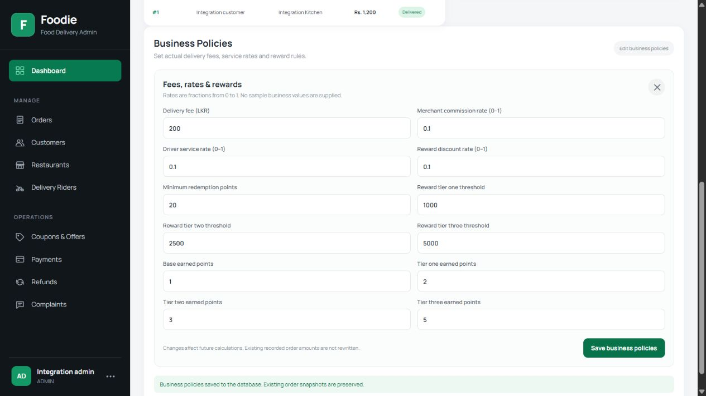
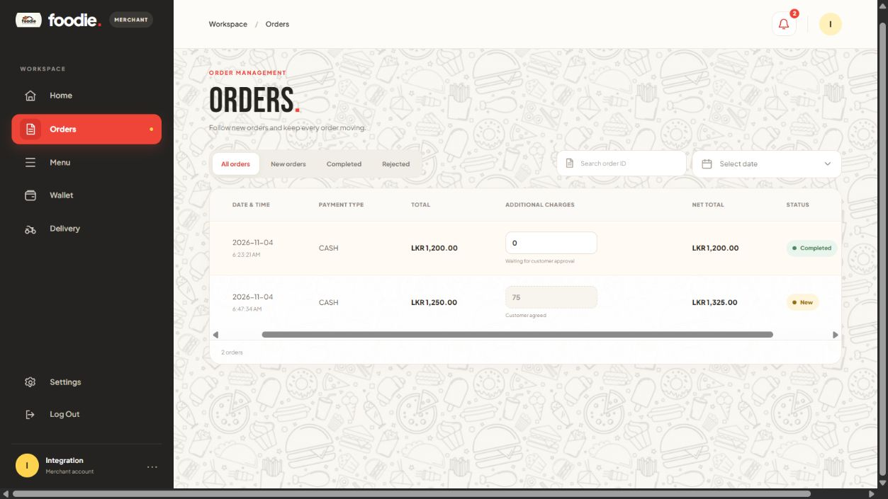
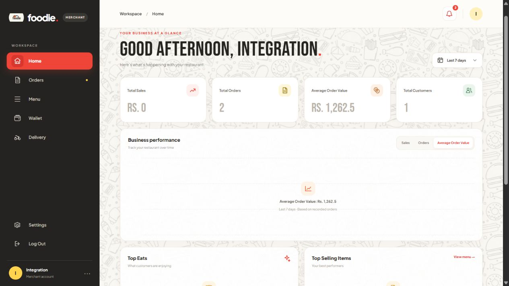

4 November 2026. Before: untouched original dist from the baseline ZIP. After: editable original source with approved wiring. No generated images/redesigned mockups. H2 fixture records, not live Aiven. CSS/assets/dist hashes unchanged. This is visual comparison, not pixel-perfect certification for every responsive state.
baseline — read-only original dist; APIs disconnectedcurrent — original editable source with API wiring
Real browser workflow evidence
Final run: test restaurant/menu ID1, price1050, database delivery150, order1 total1200. Preparing→Ready→Driver pickup/completion→Customer Delivered, matching Admin record. Cash stayed pending. Earlier review/customer control screenshots came from the first isolated run (order1 total1150), before the H2 runtime reset.

final-customer-placed.jpg — Foodie/frontend/customer/src; /checkout or /track-order or /store/1

final-customer-delivered.jpg — Foodie/frontend/customer/src; /checkout or /track-order or /store/1
Actual browser records: Admin delivery fee150→200; new order2 total1250. Merchant proposed75; Customer explicitly accepted; refreshed total1325, matched by Admin/Merchant. Existing delivered order1 remained1200. Registered consent tested through browser; guest-token consent tested through backend. All are isolated H2 records.

admin-policies-saved.jpg — Foodie/frontend/admin/src; Dashboard/Orders at /
admin-extra-charge-order.jpg — Foodie/frontend/admin/src; Dashboard/Orders at /

merchant-extra-charge-agreed.jpg — Foodie/frontend/merchant/src; Orders at /
Merchant database summaries and current review
Original chart/insight slots now show recorded summaries:2 orders, average1262.5 after consent,1 repeat customer, real completed item quantities and the actual Customer review. No new chart design or sample series was generated.

Foodie/frontend/merchant/src/App.jsx — Home; actual persisted H2 records.